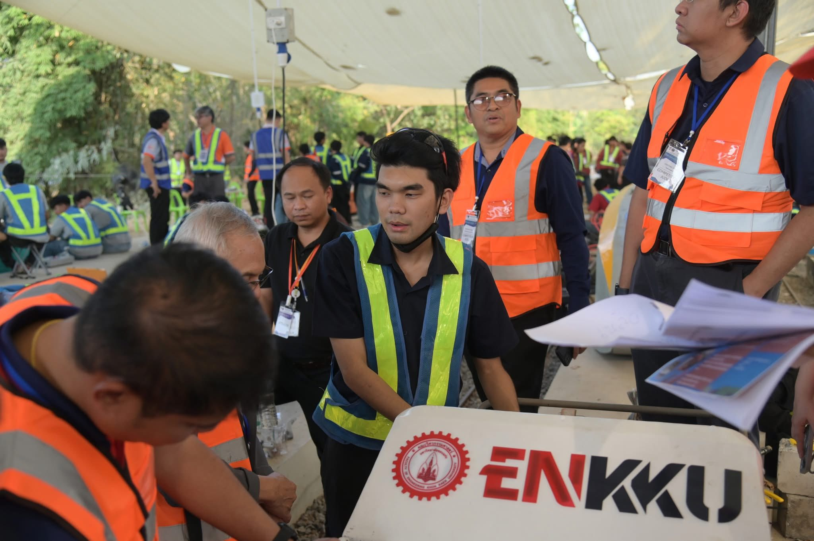
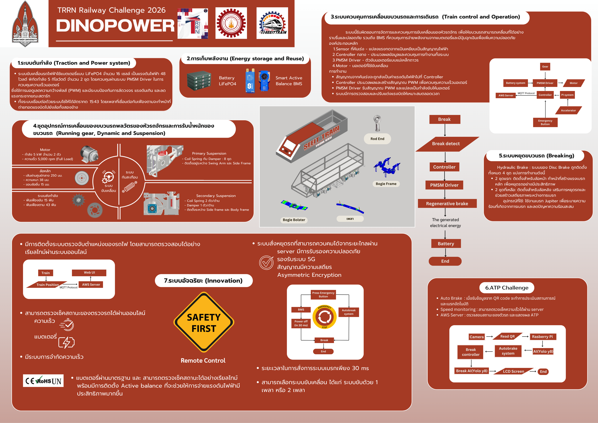

Project Train TRRN Railway Challenge 2026



Video
สามารถดูวิดีโอการทำเดินรถด้วยระบบได้ ลิงก์นี้
รายละเอียดโปรเจกต์
ออกแบบระบบควบคุมรถราง โดยใช้ Microcontroller ร่วมกับระบบ IOT สามารถสั่งการระบบขับเคลื่อนได้ในระยะไกล และมีระบบตรวจสอบสถานะการทำงาน
การทำงานของระบบ
- สั่งการระบบขับเคลื่อนในระยะไกลผ่าน IOT
- ตรวจสอบสถานะการทำงานแบบ Real-time
- ควบคุมผ่าน Microcontroller
- สื่อสารผ่าน MQTT Protocol
เทคโนโลยีที่ใช้
- Microcontroller
- ESP32
- MQTT Protocol
- Node-RED
- C++
- AWS Cloud